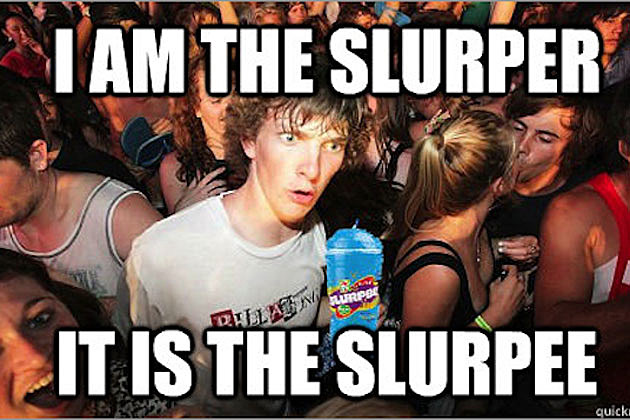

Communicating with Code: Tests That Don't Suck
I'm Chris
@cm_stead
www.chrisstead.com
A Little About Me
- I dig coding joy
- I communicate with code
- I make tools:
- JS Refactorings
- Dject
- Mochadoc
- Signet
- Stubcontractor
A Fake Widget Company
We run Creative Widget Company and we prototype widgets... creatively?
We Have Legacy Code.
Code will go here
Why Do We Say We Test?
- To verify correct behavior
- To capture information about bugs
- To meet code coverage
- We were told to
Tests Get No Respect

Let's Test Some Code!
it('should return widgets', function () {
const result = widgetFactory
.buildWidgets("WidgeCo", {
widgetMeta: {
gearTeethCount: 91,
handles: 3
},
presets: ['foo', 5, 12.3]
}, 17);
assert.equal(typeof result, object, 'Oh noes!');
});
Are There Better Reasons To Test?
- Communication
- Communication
- Communication
We Exercised The Code, But...
- Description text should declare intent
- Named variables expose meaning better
- Complex objects can be extracted away
- Assertions should ensure full proper behavior
Tests That Communicate
- Inform other developers of original intent
- Exemplify API use
- Deepen understanding of code contracts
- Expose criteria for correct behavior
Writing Great Code Is Like Writing A Great Story
It Never Happens In A Single Pass
Where Do We Start?
Sometimes choosing the right place to start is the hardest thing you'll do all day
Here's What I'd Do
- Extract variables
- Define and test with output type
- Build factory for setup data
- Update description
- Introduce golden master test for completeness
Why Go That Way?
- Extracting variables is fast and easy
- Good types are descriptive
- Data factories remove noise
- Declarative code leads us to better descriptions
- Golden master tests are great, but harder to set up
Extract Variable
Part of This Healthy Refactoring
(P.S. You probably have a tool that will do this for you!)
it('should return widgets', function () {
const companyName = "WidgeCo";
const widgetCount = 17;
const widgetSpec = {
widgetMeta: {
gearTeethCount: 91,
handles: 3
},
presets: ['foo', 5, 12.3]
}
const widgets = widgetFactory
.buildWidgets(companyName, widgetSpec, widgetCount);
assert.equal(typeof widgets, object, 'Oh noes!');
});
Happy Variable Names, Everywhere!
Domain Modeling For The Fearless
Signet Types Allow for Rich Verification
Let's Model a Widget
const signet = require('signet')();
signet.defineDuckType('widget', {
companyName: 'string',
handles: 'array<string>',
teethCount: 'int',
startupDisplay: 'string',
logMaxLength: 'int',
humFrequencyTolerance: 'number'
});
module.exports = signet;
... And Build a Utility Function
function assertByType(type, value, errorMessage) {
const isCorrectType = signet.isTypeOf(type);
assert(isCorrectType(value), errorMessage);
}
Then Our Test Becomes...
it('should return widgets', function () {
const companyName = "WidgeCo";
const widgetCount = 17;
const widgetSpec = {
// Truncated for brevity
}
const widgets = widgetFactory
.buildWidgets(companyName, widgetSpec, widgetCount);
assertByType('array<widget>', widgets, 'We didn\'t get a widget array!');
});
Factories For Fun and Profit
Declarative Test Data with DataMother
Moving Our Spec to DataMother
function widgetSpecFactory () {
return {
widgetMeta: {
gearTeethCount: 91,
handles: 3
},
presets: ['foo', 5, 12.3]
};
}
dataMother.register('widgetSpec', widgetSpecFactory);
Then, Simply Declare What We Need
it('should return widgets', function () {
const companyName = "WidgeCo";
const widgetCount = 17;
const widgetSpec = dataMother.buildData('widgetSpec');
const widgets = widgetFactory
.buildWidgets(companyName, widgetSpec, widgetCount);
assertByType('array<widget>', widgets, 'We didn\'t get a widget array!');
});
Clarity...
A Well-Described Test
Choice Words Make All The Difference
Words and Code Together In Harmony
it('should build a widget array using a company, widget spec and count', function () {
const companyName = "WidgeCo";
const widgetCount = 17;
const widgetSpec = dataMother.buildData('widgetSpec');
const widgets = widgetFactory
.buildWidgets(companyName, widgetSpec, widgetCount);
assertByType('array<widget>', widgets, 'We didn\'t get a widget array!');
});
Bonus Round: Verifying Data For Great Justice
Using Approvals To Ensure Data Correctness
The Setup
const approvalsLocation = './test/approvals';
const approvalsConfigFactory = require('approvals-config-factory');
const approvalsConfig = approvalsConfigFactory.buildApprovalsConfig({
reporter: 'kdiff3'
});
module.exports = require('approvals')
.configure(approvalsConfig)
.mocha(approvalsLocation);
The Verification
it('should build a widget array using a company, widget spec and count', function () {
const companyName = "WidgeCo";
const widgetCount = 17;
const widgetSpec = dataMother.buildData('widgetSpec');
const widgets = widgetFactory
.buildWidgets(companyName, widgetSpec, widgetCount);
assertByType('array<widget>', widgets, 'We didn\'t get a widget array!');
this.verifyAsJSON(widgets);
});
Enlightenment
The Takeaway
- Tests should do more than exercise code
- All good tests should facilitate communication
- Documentation + tests is doubling your effort
- The right tools can ease testing turmoil
Libraries I Used
- Mocha ( https://www.npmjs.com/package/mocha)
- Chai ( https://www.npmjs.com/package/chai)
- Signet ( https://www.npmjs.com/package/signet)
- DataMother ( https://www.npmjs.com/package/datamother)
- Approvals.js ( https://www.npmjs.com/package/approvals)
- Approvals Config Factory ( https://www.npmjs.com/package/approvals-config-factory)
Thank you!
http://www.chrisstead.com/presentations/testing-for-communication